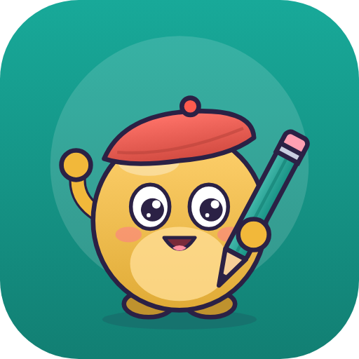
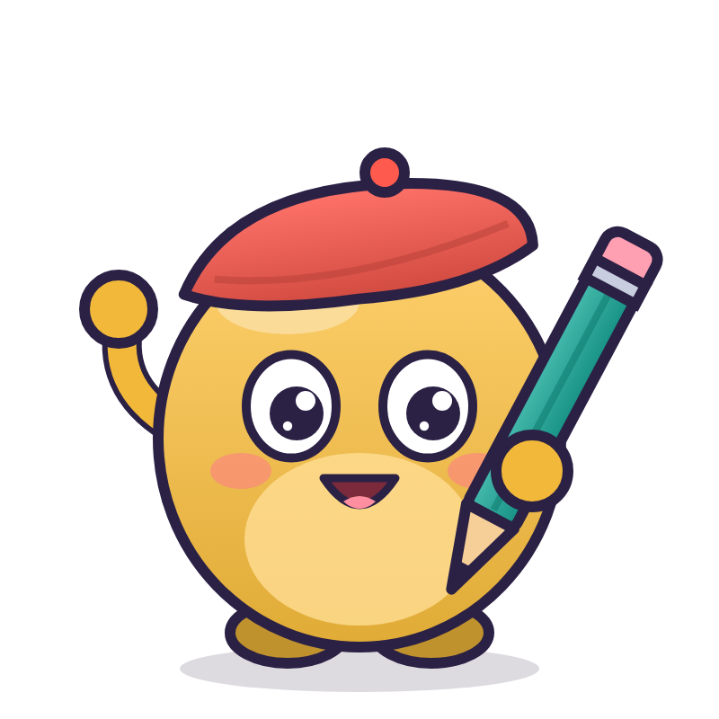

Fabulo
« Fabrique » + « fabuleux ». Fabu est un petit auteur à béret : il écoute votre idée et la dessine au crayon. Univers atelier, papier, couleurs chaudes.
Texte courant en Nunito — on décrit le jeu, l'agent le fabrique, on joue, on donne son avis.
Aperçu du haut de la landing page avec cette identité.
Commencer